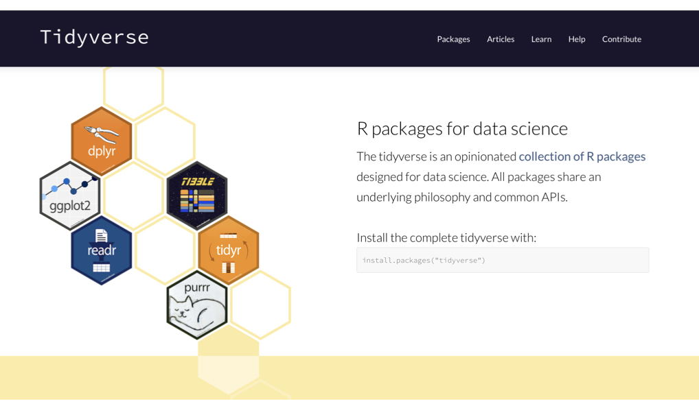
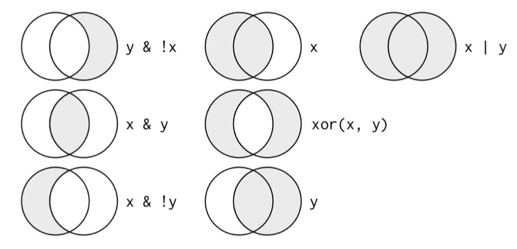
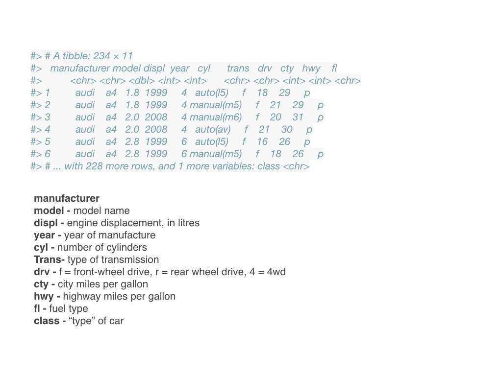
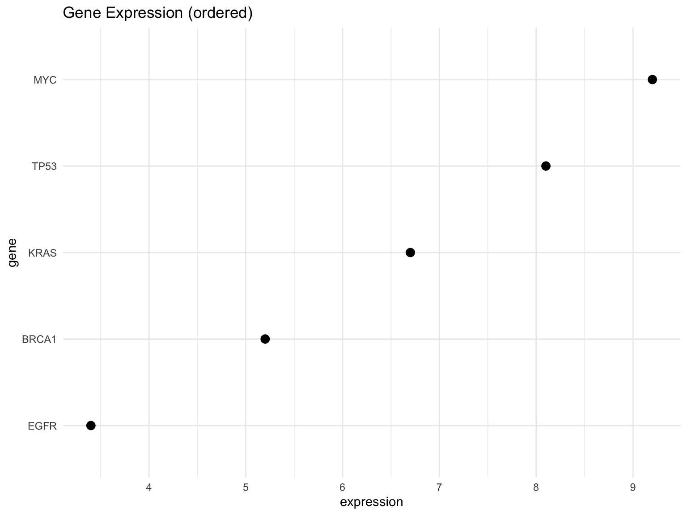

| Gene Expression Data (Tidy Format) | |||
| sample_id | timepoint | gene | expression |
|---|---|---|---|
| S001 | 0h | BRCA1 | 4.2 |
| S002 | 0h | BRCA1 | 3.8 |
| S003 | 0h | BRCA1 | 4.5 |
| S001 | 24h | BRCA1 | 8.1 |
| S002 | 24h | BRCA1 | 7.9 |
| S003 | 24h | BRCA1 | 9.2 |
8 Tidy Data Principles
NoteLearning Objectives
After completing this chapter, you will be able to:
- Define tidy data and explain its three principles
- Identify common problems in messy datasets
- Apply tidy data principles to your own data
- Distinguish between different data types
- Implement best practices for data organization
- Use appropriate file formats for data storage
- Use the tidyverse packages for data manipulation
- Apply dplyr verbs: filter, select, mutate, arrange, summarize
- Join multiple data frames using various join types
- Reshape data between wide and long formats with pivot functions
- Chain operations using the pipe operator
- Work with tibbles as modern data frames and inspect them with
glimpse() - Detect, drop, and replace missing values
- Understand when to use data.table for high-performance data wrangling
8.1 Why Data Organization Matters
Before you can analyze data, you must organize it. The structure of your data profoundly affects how easily you can work with it. A well-organized dataset can be analyzed in minutes; a poorly organized one might require hours of preprocessing.
Consider this scenario: you’ve completed an experiment measuring gene expression levels in fish embryos exposed to different environmental stressors. You carefully collected samples at multiple developmental stages, ran your assays, and now have a spreadsheet full of numbers. The analysis should be straightforward—just load the data and run some statistical tests.
But then reality sets in. Your spreadsheet has multiple header rows. Some columns contain merged cells indicating experimental blocks. Treatment conditions are color-coded rather than labeled. Missing values appear as empty cells, question marks, or the word “missing” depending on who entered the data. Suddenly, what should have been an afternoon of analysis becomes a week of data cleaning.
This scenario plays out in laboratories around the world, every day. The solution isn’t just better software—it’s better data organization from the start.
Tidy data provides a standard way to organize data that makes analysis easier. It’s not the only valid way to structure data, but it’s particularly well-suited for analysis in R and Python (pandas follows the same ideas; see Section 12.12). When your data is tidy, you spend less time wrestling with data formats and more time answering scientific questions.
NoteData Wrangling in the Wild
It’s often said that 80% of data analysis is spent on data cleaning and preparation. While this statistic varies by field and project, the underlying truth remains: thoughtful data organization at the start of a project saves enormous time and frustration later.
8.2 The Three Principles of Tidy Data
Hadley Wickham formalized the concept of tidy data in an influential paper (Wickham, 2014). Tidy data follows three rules:
ImportantThe Three Rules of Tidy Data
- Each variable forms a column
- Each observation forms a row
- Each value has its own cell

Wickham’s original paper states the third rule slightly differently: each type of observational unit forms its own table (we return to this in Section 8.4.4). The rules are interrelated—it is impossible to satisfy only two of the three—which leads to an even simpler pair of practical instructions:
- Put each dataset in a tibble (or data frame)
- Put each variable in a column
Real-world data rarely arrives in this form. Spreadsheets often encode information in column names, spread a single variable across several columns, or combine several variables in one column. Data wrangling is the process of transforming such messy data into tidy data, and the rest of this chapter is about the tools for doing so.
Let’s unpack what the three rules mean.
Variables as Columns
A variable is a characteristic that you measure, observe, or categorize. Examples:
- Gene expression level
- Treatment group
- Patient age
- Sample ID
- Measurement date
Each variable should have its own column with a descriptive header.
Observations as Rows
An observation is a single unit of data collection—typically one measurement from one subject at one time point. Each observation gets its own row.
Values in Cells
Each cell contains exactly one value. No merged cells, no multiple values crammed together, no implicit values indicated by color or formatting.
8.3 Tidy vs. Messy Data: Examples
A Tidy Dataset
This is tidy because:
- Each column is a variable (sample_id, timepoint, gene, expression)
- Each row is an observation (one expression measurement)
- Each cell has one value
A Messy Dataset (Same Data)
A common messy format spreads measurements across columns:
| Gene Expression Data (Messy Format) | ||
| sample_id | BRCA1_0h | BRCA1_24h |
|---|---|---|
| S001 | 4.2 | 8.1 |
| S002 | 3.8 | 7.9 |
| S003 | 4.5 | 9.2 |
This is messy because:
- Time point and gene are embedded in column names
- Each row represents multiple observations
- Adding genes or timepoints requires adding columns
Why It Matters
With tidy data, operations are straightforward:
| timepoint | mean_expression |
|---|---|
| 0h | 4.166667 |
| 24h | 8.400000 |
| sample_id | timepoint | gene | expression |
|---|---|---|---|
| S001 | 24h | BRCA1 | 8.1 |
| S002 | 24h | BRCA1 | 7.9 |
| S003 | 24h | BRCA1 | 9.2 |
With messy data, you must first reshape it—or write complex code to work around the structure.
8.4 Common Data Problems
Problem 1: Column Headers Are Values
Often, column names contain data values rather than variable names:
| country | 2020 | 2021 | 2022 |
|---|---|---|---|
| USA | 331 | 332 | 333 |
| Canada | 38 | 38 | 39 |
| Mexico | 129 | 130 | 131 |
Solution: “Pivot” the data to create a year column:
| country | year | population |
|---|---|---|
| USA | 2020 | 331 |
| USA | 2021 | 332 |
| USA | 2022 | 333 |
| Canada | 2020 | 38 |
| Canada | 2021 | 38 |
| Canada | 2022 | 39 |
| Mexico | 2020 | 129 |
| Mexico | 2021 | 130 |
| Mexico | 2022 | 131 |
Problem 2: Multiple Variables in One Column
Sometimes multiple pieces of information are crammed into one cell:
| country | rate |
|---|---|
| USA | 1000/50000 |
| Canada | 200/10000 |
| Mexico | 500/25000 |
Solution: Separate into distinct columns:
Problem 3: Variables in Both Rows and Columns
Complex tables sometimes mix variables across dimensions:
| measurement | subject | control | treatment |
|---|---|---|---|
| weight | A | 70 | 68 |
| height | A | 170 | 170 |
| weight | B | 65 | 64 |
| height | B | 165 | 166 |
This requires multiple steps to tidy: pivot longer, then pivot wider.
Problem 4: Multiple Observational Units
When a single table contains data about different types of things:
# Messy: patient and hospital info in same table
combined_data <- tibble(
patient_id = c("P001", "P002"),
patient_name = c("Alice", "Bob"),
hospital_id = c("H1", "H1"),
hospital_name = c("General", "General"),
hospital_beds = c(500, 500), # Repeated!
diagnosis = c("Flu", "Cold")
)
combined_data |> gt()| patient_id | patient_name | hospital_id | hospital_name | hospital_beds | diagnosis |
|---|---|---|---|---|---|
| P001 | Alice | H1 | General | 500 | Flu |
| P002 | Bob | H1 | General | 500 | Cold |
Solution: Normalize into separate tables linked by keys.
8.5 Best Practices for Data Organization
Naming Conventions
TipData File Naming Rules
File names:
- Use descriptive names:
patient_outcomes_2024.csv - Include dates in ISO format:
YYYY-MM-DD - Avoid spaces (use underscores or hyphens)
- Keep names concise but informative
Column names:
- Use lowercase with underscores:
sample_id,gene_expression - Make names meaningful:
treatment_groupnottg - Avoid special characters and spaces
- Start with a letter, not a number
File Formats
Table 8.3 lists the formats you will meet most often; Appendix C describes them in more detail.
| Format | Extension | Best For |
|---|---|---|
| Comma-separated | .csv |
General tabular data |
| Tab-separated | .tsv |
Data containing commas |
| Plain text | .txt |
Simple data, scripts |
| Excel | .xlsx |
Sharing with non-programmers |
| RDS | .rds |
R-specific data with types preserved |
| Parquet | .parquet |
Large datasets, fast reading |
For long-term storage and sharing, prefer plain text formats (CSV, TSV) over proprietary formats. They’re human-readable and don’t require specific software.
Documentation
Always create a data dictionary (also called a codebook) documenting:
- Variable names and descriptions
- Units of measurement
- Allowable values or categories
- Coding of missing values
- Source of the data
- Date created/modified
Preserving Raw Data
WarningNever Modify Raw Data
Always keep an unchanged copy of your original data. Create a separate processed version for analysis. This allows you to:
- Retrace your steps if something goes wrong
- Rerun analysis with different preprocessing
- Share the original data with collaborators
Keep raw files in their own directory, with write permission removed if possible (chmod a-w, Section 4.9.2). All cleaning and transformation should be done programmatically, in scripts that can be re-run, with the outputs saved to new files.
Data File Do’s and Don’ts
The naming rules above cover file and column names; these guidelines cover the contents of a data file, whether you edit it with Unix tools, R, or a spreadsheet program.
TipDo
- Add new observations as rows and new variables as columns, so the file stays rectangular
- Include exactly one header row with concise but descriptive variable names
-
Use ISO 8601 dates (
YYYY-MM-DD): they sort correctly as text and contain no delimiter characters -
Represent missing values consistently, as empty cells or
NA - Maintain metadata (a data dictionary, Section 8.5.3) alongside the file
WarningDon’t
-
Don’t mix data types within a column. If a column holds numbers, every entry should be a number or an explicit
NA, never a note like"below detection" -
Don’t use delimiter characters inside values. In a comma-delimited file, a value such as
March 8, 2024will be split into two fields - Don’t paste data from formatted documents such as Word; hidden formatting characters can corrupt a file
-
Don’t open data files in Excel to edit them unless you know what it will silently convert: gene names such as
SEPT1andMARCH1become dates, and long identifiers become scientific notation - Don’t encode information in colour or formatting. Everything must live in the cell values, because formatting is lost on export
- Don’t leave empty rows or columns as visual separators. They break the rectangular structure that import functions expect
8.6 Data Types
Understanding data types helps you organize and analyze correctly.
Categorical vs. Quantitative
data_types <- tibble(
Category = c("Categorical", "Categorical", "Quantitative", "Quantitative"),
Type = c("Ordinal", "Nominal", "Ratio", "Interval"),
Description = c(
"Ordered categories",
"Unordered categories",
"True zero, ratios meaningful",
"No true zero"
),
Examples = c(
"small, medium, large",
"red, blue, green",
"height, weight, concentration",
"temperature (°C), calendar year"
)
)
data_types |>
gt() |>
tab_header(title = "Data Type Classification")| Data Type Classification | |||
| Category | Type | Description | Examples |
|---|---|---|---|
| Categorical | Ordinal | Ordered categories | small, medium, large |
| Categorical | Nominal | Unordered categories | red, blue, green |
| Quantitative | Ratio | True zero, ratios meaningful | height, weight, concentration |
| Quantitative | Interval | No true zero | temperature (°C), calendar year |
Quantitative data can be further split into discrete values (counts, integers, scores on a fixed scale) and continuous values that can in principle take any value in a range (mass, concentration, expression level). The interval/ratio distinction matters because ratio data support statements like “twice as much” while interval data do not: 20 g is twice as heavy as 10 g, but water at 20 °C is not “twice as hot” as water at 10 °C.
R Data Types
Each of these kinds of data maps onto a specific R type (Table 8.5 and Figure 8.2); the vector types themselves are introduced in Section 11.6.
| Data Type | Description | Examples | R Type |
|---|---|---|---|
| Character | Text strings | “control”, gene names | character |
| Factor | Categorical with levels, unordered | Species, treatment groups | factor |
| Ordered factor | Categorical with a meaningful order | “low” < “medium” < “high” | ordered |
| Integer | Whole numbers | Counts, discrete measurements | integer |
| Numeric | Real numbers | Measurements, ratios, continuous data |
numeric (double) |
| Logical | True/false values | QC pass/fail, conditions | logical |
| Date | Calendar dates | “2024-01-15”, collection dates | Date |
| Date-time | Timestamps with time | “2024-01-15 14:30:00” | POSIXct |

# Numeric (continuous)
temperature <- c(37.2, 36.8, 38.1)
class(temperature)
#> [1] "numeric"
typeof(temperature) # stored as "double"
#> [1] "double"
# Integer (the L suffix)
counts <- c(1L, 2L, 3L)
class(counts)
#> [1] "integer"
# Character
sample_names <- c("control", "treatment", "treatment")
class(sample_names)
#> [1] "character"
# Factor (categorical)
treatment <- factor(c("low", "medium", "high"),
levels = c("low", "medium", "high"),
ordered = TRUE)
class(treatment)
#> [1] "ordered" "factor"
treatment
#> [1] low medium high
#> Levels: low < medium < high
# Logical
passed_qc <- c(TRUE, TRUE, FALSE)
class(passed_qc)
#> [1] "logical"
# Date
collected <- as.Date("2024-01-15")
class(collected)
#> [1] "Date"class() reports the type R uses when choosing how to print, plot, or model an object; typeof() reports how the values are stored underneath (a numeric vector is stored as double, a factor as integer). Getting types right matters because statistical and plotting functions treat factors differently from character strings, and arithmetic only works on numeric types.
When to Use Factors
Factors are R’s way of handling categorical variables. Use them when:
- You have a limited set of possible values
- The order matters (ordinal data)
- You want specific grouping in analyses and plots
# Character vector sorts alphabetically
treatments <- c("High", "Low", "Medium", "Low", "High")
sort(treatments)
#> [1] "High" "High" "Low" "Low" "Medium"
# Factor maintains meaningful order
treatments_factor <- factor(treatments,
levels = c("Low", "Medium", "High"))
sort(treatments_factor)
#> [1] Low Low Medium High High
#> Levels: Low Medium High8.7 Structuring Spreadsheets for Analysis
If you must use spreadsheets for data entry, follow these guidelines:
ImportantSpreadsheet Best Practices
- One header row only — Put variable names in row 1
- No merged cells — They break data structure
- No color-coding as data — Use a column instead
-
Consistent missing values — Use
NA, not blank,-, orN/A - One sheet per dataset — Don’t spread data across tabs
- Export as CSV — Preserve as plain text
- No calculations in raw data — Keep raw and calculated data separate
Before and After
Bad spreadsheet practices:
- Merged cells for visual grouping
- Color-coded cells indicating categories
- Multiple header rows
- Notes in random cells
- Mixed data types in columns
- Embedded calculations
Good spreadsheet practices:
- Clean rectangular data
- Single header row
- Consistent formatting throughout
- Separate documentation sheet
- Explicit coding of all information
8.8 The Tidyverse: A Collection of Data Science Packages
The tidyverse is a collection of R packages designed for data science that share a common philosophy and work seamlessly together (Wickham et al., 2019). These packages make data manipulation, visualization, and analysis more intuitive and readable (Figure 8.3).

Core Tidyverse Packages
The core packages are listed in Table 8.6; ggplot2 has its own chapter (Chapter 13) and purrr is used in Chapter 14.
| Package | Purpose |
|---|---|
| dplyr | Data manipulation (filter, select, mutate, etc.) |
| ggplot2 | Data visualization |
| tidyr | Data tidying (pivot, separate, etc.) |
| readr | Fast data import |
| purrr | Functional programming |
| stringr | String manipulation |
| forcats | Working with factors |
| tibble | Modern data frames |
Load all core packages at once with a single library() call:
This loads the eight core tidyverse packages and displays helpful information about function conflicts (Wickham et al., 2019). For example, the message notes that dplyr::filter() masks stats::filter(): once the tidyverse is loaded, typing filter() gives you the dplyr version, and you must write stats::filter() to reach the base R one (Section 11.9.3).
Data Import with readr
The readr package provides fast, friendly functions for reading rectangular data. It’s more consistent and feature-rich than base R’s read.csv().
# Basic CSV import (tidyverse alternative to read.csv)
data <- read_csv("experiment_results.csv")
# Tab-separated files
data <- read_tsv("data.tsv")
# Semicolon-separated (common in European locales)
data <- read_csv2("data.csv")
# Fixed-width files
data <- read_fwf("data.txt", fwf_widths(c(10, 5, 8)))Controlling Column Types
By default, read_csv() guesses column types from the first 1000 rows. You can override this with col_types:
# Specify column types explicitly
data <- read_csv(
"samples.csv",
col_types = cols(
sample_id = col_character(), # Force as character
count = col_integer(), # Integer values
concentration = col_double(), # Decimal numbers
date = col_date(), # Parse as date
treatment = col_factor(levels = c("control", "drug_A", "drug_B"))
)
)
# Shorthand specification (c = character, i = integer, d = double, D = date)
data <- read_csv("samples.csv", col_types = "ciidD")
# Only override specific columns, guess the rest
data <- read_csv(
"samples.csv",
col_types = cols(
sample_id = col_character(),
.default = col_guess()
)
)
Tip
Always check problems(data) after reading to see if any values couldn’t be parsed as expected. This catches data quality issues early!
Handling Messy Column Names
Real-world data often has problematic column names (spaces, special characters, inconsistent capitalization). The janitor package provides clean_names() to standardize them:
This converts all names to lowercase snake_case, making them valid R identifiers and consistent to work with.
8.9 The Pipe Operator
One of the most powerful features of the tidyverse is the pipe operator, which allows you to chain operations together in a readable way. The pipe passes the result of one operation as the first argument of the next (Figure 8.4). Read it as “then”: take the data, then filter, then group, then summarize. This left-to-right, top-to-bottom flow mirrors how we think about data transformations, and it is the same idea as the Unix pipe | from Section 7.6, applied to R objects instead of text streams.

The Native Pipe: |>
R 4.1+ includes a native pipe operator |>:
The magrittr Pipe: %>%
The tidyverse also provides %>% from the magrittr package, which predates the native pipe and is what you will see in older code and tutorials:
The two differ in small ways: %>% uses . as a placeholder for the piped value and lets you call a function without parentheses (x %>% mean), while |> uses _ as a placeholder (only for a named argument) and always requires parentheses. |> needs no package, so this book uses it throughout; either is fine as long as you are consistent within a project.
Tip
The pipe transforms x |> f(y) into f(x, y). Think of it as “take this, then do that.” This makes code read like a recipe: take data, then filter, then select, then summarize. In Positron, Ctrl/Cmd + Shift + M inserts a pipe (Appendix A).
8.10 Data Manipulation with dplyr
The dplyr package provides a consistent set of “verbs” for data manipulation. These functions are designed to be intuitive and compose well together.
The Five Core dplyr Verbs
Table 8.7 summarizes the five verbs; the same verbs work on database tables through dbplyr (Chapter 20).
| Verb | Action |
|---|---|
filter() |
Pick rows based on conditions |
select() |
Pick columns by name |
arrange() |
Reorder rows |
mutate() |
Create or modify columns |
summarize() |
Reduce to summary statistics |
Let’s create sample data to demonstrate these:
# Sample experimental data
experiments <- tibble(
sample_id = paste0("S", 1:12),
treatment = rep(c("control", "drug_A", "drug_B"), each = 4),
replicate = rep(1:4, 3),
expression = c(10.2, 11.1, 9.8, 10.5, # control
15.3, 14.8, 16.2, 15.0, # drug_A
18.1, 19.2, 17.5, 18.8), # drug_B
cell_count = c(1000, 1050, 980, 1020,
1100, 1080, 1150, 1090,
1200, 1250, 1180, 1220)
)
experiments| sample_id | treatment | replicate | expression | cell_count |
|---|---|---|---|---|
| S1 | control | 1 | 10.2 | 1000 |
| S2 | control | 2 | 11.1 | 1050 |
| S3 | control | 3 | 9.8 | 980 |
| S4 | control | 4 | 10.5 | 1020 |
| S5 | drug_A | 1 | 15.3 | 1100 |
| S6 | drug_A | 2 | 14.8 | 1080 |
| S7 | drug_A | 3 | 16.2 | 1150 |
| S8 | drug_A | 4 | 15.0 | 1090 |
| S9 | drug_B | 1 | 18.1 | 1200 |
| S10 | drug_B | 2 | 19.2 | 1250 |
| S11 | drug_B | 3 | 17.5 | 1180 |
| S12 | drug_B | 4 | 18.8 | 1220 |
Filtering Rows with filter()
Select rows that meet specific conditions:
| sample_id | treatment | replicate | expression | cell_count |
|---|---|---|---|---|
| S5 | drug_A | 1 | 15.3 | 1100 |
| S6 | drug_A | 2 | 14.8 | 1080 |
| S7 | drug_A | 3 | 16.2 | 1150 |
| S8 | drug_A | 4 | 15.0 | 1090 |
| sample_id | treatment | replicate | expression | cell_count |
|---|---|---|---|---|
| S5 | drug_A | 1 | 15.3 | 1100 |
| S7 | drug_A | 3 | 16.2 | 1150 |
| sample_id | treatment | replicate | expression | cell_count |
|---|---|---|---|---|
| S5 | drug_A | 1 | 15.3 | 1100 |
| S6 | drug_A | 2 | 14.8 | 1080 |
| S7 | drug_A | 3 | 16.2 | 1150 |
| S8 | drug_A | 4 | 15.0 | 1090 |
| S9 | drug_B | 1 | 18.1 | 1200 |
| S10 | drug_B | 2 | 19.2 | 1250 |
| S11 | drug_B | 3 | 17.5 | 1180 |
| S12 | drug_B | 4 | 18.8 | 1220 |
| sample_id | treatment | replicate | expression | cell_count |
|---|---|---|---|---|
| S5 | drug_A | 1 | 15.3 | 1100 |
| S6 | drug_A | 2 | 14.8 | 1080 |
| S7 | drug_A | 3 | 16.2 | 1150 |
| S8 | drug_A | 4 | 15.0 | 1090 |
| S9 | drug_B | 1 | 18.1 | 1200 |
| S10 | drug_B | 2 | 19.2 | 1250 |
| S11 | drug_B | 3 | 17.5 | 1180 |
| S12 | drug_B | 4 | 18.8 | 1220 |
Conditions are built from the comparison and logical operators in Table 8.8 (introduced in Section 11.7.3). Separate conditions with commas for AND; & and | combine conditions the way set intersection and union do (Figure 8.5).

& keeps rows in both sets, | keeps rows in either, and ! keeps the complement.
Warning
filter() keeps only rows where the condition is TRUE. Rows where the condition evaluates to NA are silently dropped, so filter(expression > 15) also removes rows with a missing expression. Use is.na() explicitly if you want to keep or inspect them (Section 8.11).
Selecting Columns with select()
Choose which columns to keep:
| sample_id | treatment | expression |
|---|---|---|
| S1 | control | 10.2 |
| S2 | control | 11.1 |
| S3 | control | 9.8 |
| S4 | control | 10.5 |
| S5 | drug_A | 15.3 |
| S6 | drug_A | 14.8 |
| S7 | drug_A | 16.2 |
| S8 | drug_A | 15.0 |
| S9 | drug_B | 18.1 |
| S10 | drug_B | 19.2 |
| S11 | drug_B | 17.5 |
| S12 | drug_B | 18.8 |
| sample_id | treatment | replicate |
|---|---|---|
| S1 | control | 1 |
| S2 | control | 2 |
| S3 | control | 3 |
| S4 | control | 4 |
| S5 | drug_A | 1 |
| S6 | drug_A | 2 |
| S7 | drug_A | 3 |
| S8 | drug_A | 4 |
| S9 | drug_B | 1 |
| S10 | drug_B | 2 |
| S11 | drug_B | 3 |
| S12 | drug_B | 4 |
| sample_id | treatment | replicate | expression |
|---|---|---|---|
| S1 | control | 1 | 10.2 |
| S2 | control | 2 | 11.1 |
| S3 | control | 3 | 9.8 |
| S4 | control | 4 | 10.5 |
| S5 | drug_A | 1 | 15.3 |
| S6 | drug_A | 2 | 14.8 |
| S7 | drug_A | 3 | 16.2 |
| S8 | drug_A | 4 | 15.0 |
| S9 | drug_B | 1 | 18.1 |
| S10 | drug_B | 2 | 19.2 |
| S11 | drug_B | 3 | 17.5 |
| S12 | drug_B | 4 | 18.8 |
| expression |
|---|
| 10.2 |
| 11.1 |
| 9.8 |
| 10.5 |
| 15.3 |
| 14.8 |
| 16.2 |
| 15.0 |
| 18.1 |
| 19.2 |
| 17.5 |
| 18.8 |
| replicate | expression | cell_count |
|---|---|---|
| 1 | 10.2 | 1000 |
| 2 | 11.1 | 1050 |
| 3 | 9.8 | 980 |
| 4 | 10.5 | 1020 |
| 1 | 15.3 | 1100 |
| 2 | 14.8 | 1080 |
| 3 | 16.2 | 1150 |
| 4 | 15.0 | 1090 |
| 1 | 18.1 | 1200 |
| 2 | 19.2 | 1250 |
| 3 | 17.5 | 1180 |
| 4 | 18.8 | 1220 |
| expression | cell_count | sample_id | treatment | replicate |
|---|---|---|---|---|
| 10.2 | 1000 | S1 | control | 1 |
| 11.1 | 1050 | S2 | control | 2 |
| 9.8 | 980 | S3 | control | 3 |
| 10.5 | 1020 | S4 | control | 4 |
| 15.3 | 1100 | S5 | drug_A | 1 |
| 14.8 | 1080 | S6 | drug_A | 2 |
| 16.2 | 1150 | S7 | drug_A | 3 |
| 15.0 | 1090 | S8 | drug_A | 4 |
| 18.1 | 1200 | S9 | drug_B | 1 |
| 19.2 | 1250 | S10 | drug_B | 2 |
| 17.5 | 1180 | S11 | drug_B | 3 |
| 18.8 | 1220 | S12 | drug_B | 4 |
The selection helpers are useful with wide datasets: starts_with(), ends_with(), and contains() match literal text, matches() takes a regular expression (Chapter 9), num_range("x", 1:3) picks x1, x2, x3, where() selects by a predicate on the column, and everything() stands for all remaining columns (handy for reordering). The same helpers work inside pivot_longer() and across().
Arranging Rows with arrange()
Sort data by one or more columns:
| sample_id | treatment | replicate | expression | cell_count |
|---|---|---|---|---|
| S3 | control | 3 | 9.8 | 980 |
| S1 | control | 1 | 10.2 | 1000 |
| S4 | control | 4 | 10.5 | 1020 |
| S2 | control | 2 | 11.1 | 1050 |
| S6 | drug_A | 2 | 14.8 | 1080 |
| S8 | drug_A | 4 | 15.0 | 1090 |
| S5 | drug_A | 1 | 15.3 | 1100 |
| S7 | drug_A | 3 | 16.2 | 1150 |
| S11 | drug_B | 3 | 17.5 | 1180 |
| S9 | drug_B | 1 | 18.1 | 1200 |
| S12 | drug_B | 4 | 18.8 | 1220 |
| S10 | drug_B | 2 | 19.2 | 1250 |
| sample_id | treatment | replicate | expression | cell_count |
|---|---|---|---|---|
| S10 | drug_B | 2 | 19.2 | 1250 |
| S12 | drug_B | 4 | 18.8 | 1220 |
| S9 | drug_B | 1 | 18.1 | 1200 |
| S11 | drug_B | 3 | 17.5 | 1180 |
| S7 | drug_A | 3 | 16.2 | 1150 |
| S5 | drug_A | 1 | 15.3 | 1100 |
| S8 | drug_A | 4 | 15.0 | 1090 |
| S6 | drug_A | 2 | 14.8 | 1080 |
| S2 | control | 2 | 11.1 | 1050 |
| S4 | control | 4 | 10.5 | 1020 |
| S1 | control | 1 | 10.2 | 1000 |
| S3 | control | 3 | 9.8 | 980 |
| sample_id | treatment | replicate | expression | cell_count |
|---|---|---|---|---|
| S2 | control | 2 | 11.1 | 1050 |
| S4 | control | 4 | 10.5 | 1020 |
| S1 | control | 1 | 10.2 | 1000 |
| S3 | control | 3 | 9.8 | 980 |
| S7 | drug_A | 3 | 16.2 | 1150 |
| S5 | drug_A | 1 | 15.3 | 1100 |
| S8 | drug_A | 4 | 15.0 | 1090 |
| S6 | drug_A | 2 | 14.8 | 1080 |
| S10 | drug_B | 2 | 19.2 | 1250 |
| S12 | drug_B | 4 | 18.8 | 1220 |
| S9 | drug_B | 1 | 18.1 | 1200 |
| S11 | drug_B | 3 | 17.5 | 1180 |
Missing values are always sorted to the end, regardless of whether you sort ascending or descending.
Creating Columns with mutate()
Add new columns or modify existing ones:
| sample_id | treatment | replicate | expression | cell_count | log_expression | expression_per_cell |
|---|---|---|---|---|---|---|
| S1 | CONTROL | 1 | 10.2 | 1000 | 3.350497 | 10.20000 |
| S2 | CONTROL | 2 | 11.1 | 1050 | 3.472488 | 10.57143 |
| S3 | CONTROL | 3 | 9.8 | 980 | 3.292782 | 10.00000 |
| S4 | CONTROL | 4 | 10.5 | 1020 | 3.392317 | 10.29412 |
| S5 | DRUG_A | 1 | 15.3 | 1100 | 3.935460 | 13.90909 |
| S6 | DRUG_A | 2 | 14.8 | 1080 | 3.887525 | 13.70370 |
| S7 | DRUG_A | 3 | 16.2 | 1150 | 4.017922 | 14.08696 |
| S8 | DRUG_A | 4 | 15.0 | 1090 | 3.906891 | 13.76147 |
| S9 | DRUG_B | 1 | 18.1 | 1200 | 4.177918 | 15.08333 |
| S10 | DRUG_B | 2 | 19.2 | 1250 | 4.263034 | 15.36000 |
| S11 | DRUG_B | 3 | 17.5 | 1180 | 4.129283 | 14.83051 |
| S12 | DRUG_B | 4 | 18.8 | 1220 | 4.232661 | 15.40984 |
New columns can refer to columns created earlier in the same mutate() call. Any vectorized function works inside mutate(); the ones you will reach for most often are:
- Arithmetic (
+,-,*,/,^) and modular arithmetic (%/%,%%) - Logs and roots:
log(),log2(),log10(),sqrt() - Offsets:
lead(),lag()(Section 11.18.2) - Cumulative aggregates:
cumsum(),cummax(),cummean()(Section 11.18.1) - Ranking:
min_rank(),dense_rank(),row_number()(Section 11.18.3) - Conditionals:
if_else()(Section 11.16.2) andcase_when()(Section 8.13.1)
Replacing Columns with transmute()
If you only want to keep the new columns (discarding all others), use transmute():
| sample_id | log_expression | normalized |
|---|---|---|
| S1 | 3.350497 | 10.20000 |
| S2 | 3.472488 | 10.57143 |
| S3 | 3.292782 | 10.00000 |
| S4 | 3.392317 | 10.29412 |
| S5 | 3.935460 | 13.90909 |
| S6 | 3.887525 | 13.70370 |
| S7 | 4.017922 | 14.08696 |
| S8 | 3.906891 | 13.76147 |
| S9 | 4.177918 | 15.08333 |
| S10 | 4.263034 | 15.36000 |
| S11 | 4.129283 | 14.83051 |
| S12 | 4.232661 | 15.40984 |
This is useful when you’re creating a derived dataset and don’t need the original columns.
Summarizing Data with summarize()
Collapse multiple rows into summary statistics (summarise(), with the British spelling, is an identical alias):
| mean_expression | sd_expression | n_samples |
|---|---|---|
| 14.70833 | 3.490626 | 12 |
Common summary functions include mean(), median(), sd(), var(), IQR(), min(), max(), quantile(), first(), last(), nth(), n(), and n_distinct().
WarningMissing Values and Summaries
Aggregation functions return NA if any input value is NA. Pass na.rm = TRUE (for example mean(expression, na.rm = TRUE)) to drop missing values before computing, or handle them explicitly first (Section 8.11).
Grouping with group_by()
The real power of summarize() comes with group_by():
| treatment | mean_expression | sd_expression | n |
|---|---|---|---|
| control | 10.400 | 0.5477226 | 4 |
| drug_A | 15.325 | 0.6184658 | 4 |
| drug_B | 18.400 | 0.7527727 | 4 |
| treatment | mean_expr | max_expr | min_expr |
|---|---|---|---|
| drug_B | 18.400 | 19.2 | 17.5 |
| drug_A | 15.325 | 16.2 | 14.8 |
| control | 10.400 | 11.1 | 9.8 |
You can group by more than one variable, and grouping affects mutate() as well as summarize(): inside a grouped mutate(), functions like mean() or min_rank() are computed within each group, which is how you centre values on their group mean or rank samples within a treatment.
| sample_id | treatment | replicate | expression | cell_count | rank_in_group | expr_vs_group_mean |
|---|---|---|---|---|---|---|
| S1 | control | 1 | 10.2 | 1000 | 3 | -0.200 |
| S2 | control | 2 | 11.1 | 1050 | 1 | 0.700 |
| S3 | control | 3 | 9.8 | 980 | 4 | -0.600 |
| S4 | control | 4 | 10.5 | 1020 | 2 | 0.100 |
| S5 | drug_A | 1 | 15.3 | 1100 | 2 | -0.025 |
| S6 | drug_A | 2 | 14.8 | 1080 | 4 | -0.525 |
| S7 | drug_A | 3 | 16.2 | 1150 | 1 | 0.875 |
| S8 | drug_A | 4 | 15.0 | 1090 | 3 | -0.325 |
| S9 | drug_B | 1 | 18.1 | 1200 | 3 | -0.300 |
| S10 | drug_B | 2 | 19.2 | 1250 | 1 | 0.800 |
| S11 | drug_B | 3 | 17.5 | 1180 | 4 | -0.900 |
| S12 | drug_B | 4 | 18.8 | 1220 | 2 | 0.400 |
Three things to know about grouped data frames:
- A grouped tibble prints its groups at the top (
# Groups: treatment [3]), and every later verb respects the grouping until you remove it -
summarize()peels off one level of grouping, so after grouping by two variables the result is still grouped by the first. Pass.groups = "drop"to return an ungrouped result, or callungroup() - Forgetting to
ungroup()is a common source of surprising results later in a pipeline; make it a habit to ungroup as soon as the grouped step is done
Chaining Operations Together
The power of dplyr shines when chaining multiple operations:
| treatment | mean_log_expr | se |
|---|---|---|
| drug_B | 4.200724 | 0.0296177 |
| drug_A | 3.936949 | 0.0287301 |
8.11 Handling Missing Values
Missing values are ubiquitous in real data. R represents them as NA (Section 11.7.2), and most operations involving NA return NA, which is deliberate: R refuses to guess. Wrangling therefore usually starts by finding out where the missing values are and deciding what to do with them.
Detecting Missing Values
is.na() returns TRUE for each missing value; summing it counts them.
# A dataset with some gaps
assays <- tibble(
sample_id = paste0("S", 1:6),
treatment = c("control", "control", "drug_A", "drug_A", "drug_B", NA),
expression = c(10.2, NA, 15.3, 14.8, NA, 18.1)
)
# Any missing at all?
any(is.na(assays))
#> [1] TRUE
# Count missing values per column
assays |>
summarize(across(everything(), \(x) sum(is.na(x))))| sample_id | treatment | expression |
|---|---|---|
| 0 | 1 | 2 |
across() applies the same function to several columns at once; it is the tidyverse’s general tool for “do this to every column that …”, and it takes the same selection helpers as select().
Dropping Rows with Missing Values
| sample_id | treatment | expression |
|---|---|---|
| S1 | control | 10.2 |
| S3 | drug_A | 15.3 |
| S4 | drug_A | 14.8 |
| S6 | NA | 18.1 |
| sample_id | treatment | expression |
|---|---|---|
| S1 | control | 10.2 |
| S3 | drug_A | 15.3 |
| S4 | drug_A | 14.8 |
| S6 | NA | 18.1 |
| sample_id | treatment | expression |
|---|---|---|
| S1 | control | 10.2 |
| S3 | drug_A | 15.3 |
| S4 | drug_A | 14.8 |
Replacing Missing Values
Sometimes a missing value has a known meaning (a count that was not recorded because nothing was found, for instance) and should be replaced rather than dropped:
| sample_id | treatment | expression |
|---|---|---|
| S1 | control | 10.2 |
| S2 | control | NA |
| S3 | drug_A | 15.3 |
| S4 | drug_A | 14.8 |
| S5 | drug_B | NA |
| S6 | unknown | 18.1 |
| sample_id | treatment | expression |
|---|---|---|
| S1 | control | 10.2 |
| S2 | control | 0.0 |
| S3 | drug_A | 15.3 |
| S4 | drug_A | 14.8 |
| S5 | drug_B | 0.0 |
| S6 | unknown | 18.1 |
| sample_id | treatment | expression |
|---|---|---|
| S1 | control | 10.2 |
| S2 | control | 14.6 |
| S3 | drug_A | 15.3 |
| S4 | drug_A | 14.8 |
| S5 | drug_B | 14.6 |
| S6 | NA | 18.1 |
WarningUnderstand Before You Delete
Never blindly drop or fill missing values. Ask why they are missing: an assay that failed at random is different from values that are missing because they fell below a detection limit. The pattern of missingness determines whether dropping, replacing, or flagging (mutate(expr_missing = is.na(expression))) is the right choice.
8.12 Tibbles: Modern Data Frames
Tibbles are the tidyverse’s enhanced version of data frames (Figure 8.6). They are designed to be more consistent and more informative than the base data frames of Section 11.10, while remaining compatible with almost everything that works on a data frame.

Creating Tibbles
| x | y | z |
|---|---|---|
| 1 | 1 | a |
| 2 | 4 | b |
| 3 | 9 | c |
| 4 | 16 | d |
| 5 | 25 | e |
| mpg | cyl | disp | hp | drat | wt | qsec | vs | am | gear | carb |
|---|---|---|---|---|---|---|---|---|---|---|
| 21.0 | 6 | 160 | 110 | 3.90 | 2.620 | 16.46 | 0 | 1 | 4 | 4 |
| 21.0 | 6 | 160 | 110 | 3.90 | 2.875 | 17.02 | 0 | 1 | 4 | 4 |
| 22.8 | 4 | 108 | 93 | 3.85 | 2.320 | 18.61 | 1 | 1 | 4 | 1 |
| 21.4 | 6 | 258 | 110 | 3.08 | 3.215 | 19.44 | 1 | 0 | 3 | 1 |
| 18.7 | 8 | 360 | 175 | 3.15 | 3.440 | 17.02 | 0 | 0 | 3 | 2 |
| 18.1 | 6 | 225 | 105 | 2.76 | 3.460 | 20.22 | 1 | 0 | 3 | 1 |
Creating Small Tibbles with tribble()
For small datasets (especially examples or test data), tribble() provides a row-by-row format that’s easier to read:
| sample_id | treatment | expression |
|---|---|---|
| S001 | control | 10.2 |
| S002 | drug_A | 15.3 |
| S003 | drug_B | 18.1 |
This format is particularly useful for:
- Creating examples in documentation
- Quick test datasets
- Small lookup tables
Inspecting Tibbles
Printing a tibble shows its dimensions, the first 10 rows, only as many columns as fit on screen, and the type of each column in angle brackets under its name (Table 8.9).
| Abbreviation | Column type |
|---|---|
<chr> |
character |
<dbl> |
double (numeric with decimals) |
<int> |
integer |
<lgl> |
logical |
<fct> |
factor |
<date> |
Date |
<dttm> |
date-time |
For a dataset with many columns, glimpse() gives a transposed view with one line per column, showing its type and first few values; it is usually the first thing to run on newly imported data. The base R functions from Section 11.10.2 (dim(), nrow(), names(), str(), summary()) all work on tibbles too.
glimpse(as_tibble(mtcars))
#> Rows: 32
#> Columns: 11
#> $ mpg <dbl> 21.0, 21.0, 22.8, 21.4, 18.7, 18.1, 14.3, 24.4, 22.8, 19.2, 17.8,…
#> $ cyl <dbl> 6, 6, 4, 6, 8, 6, 8, 4, 4, 6, 6, 8, 8, 8, 8, 8, 8, 4, 4, 4, 4, 8,…
#> $ disp <dbl> 160.0, 160.0, 108.0, 258.0, 360.0, 225.0, 360.0, 146.7, 140.8, 16…
#> $ hp <dbl> 110, 110, 93, 110, 175, 105, 245, 62, 95, 123, 123, 180, 180, 180…
#> $ drat <dbl> 3.90, 3.90, 3.85, 3.08, 3.15, 2.76, 3.21, 3.69, 3.92, 3.92, 3.92,…
#> $ wt <dbl> 2.620, 2.875, 2.320, 3.215, 3.440, 3.460, 3.570, 3.190, 3.150, 3.…
#> $ qsec <dbl> 16.46, 17.02, 18.61, 19.44, 17.02, 20.22, 15.84, 20.00, 22.90, 18…
#> $ vs <dbl> 0, 0, 1, 1, 0, 1, 0, 1, 1, 1, 1, 0, 0, 0, 0, 0, 0, 1, 1, 1, 1, 0,…
#> $ am <dbl> 1, 1, 1, 0, 0, 0, 0, 0, 0, 0, 0, 0, 0, 0, 0, 0, 0, 1, 1, 1, 0, 0,…
#> $ gear <dbl> 4, 4, 4, 3, 3, 3, 3, 4, 4, 4, 4, 3, 3, 3, 3, 3, 3, 4, 4, 4, 3, 3,…
#> $ carb <dbl> 4, 4, 1, 1, 2, 1, 4, 2, 2, 4, 4, 3, 3, 3, 4, 4, 4, 1, 2, 1, 1, 2,…
# Extract a column as a vector
my_tibble$z
#> [1] "a" "b" "c" "d" "e"
my_tibble[["z"]]
#> [1] "a" "b" "c" "d" "e"Tibble Advantages
- Better printing: Shows first 10 rows, fits columns to screen, and reports column types
-
No partial matching:
df$colwon’t matchdf$column, and accessing a column that does not exist gives a warning - No string-to-factor conversion: Characters stay as characters
-
Preserves column types: Subsetting with
[always returns a tibble -
No row names: Anything meaningful belongs in a proper column (use
rownames_to_column()when converting a data frame such asmtcars)
# Data frame subsetting can surprise you
df <- data.frame(x = 1:3, y = 4:6)
class(df[, 1]) # Returns vector!
#> [1] "integer"
# Tibble subsetting is consistent
tb <- tibble(x = 1:3, y = 4:6)
class(tb[, 1]) # Returns tibble
#> [1] "tbl_df" "tbl" "data.frame"
# Row names become a column
mtcars |>
rownames_to_column("car") |>
as_tibble() |>
head(3)| car | mpg | cyl | disp | hp | drat | wt | qsec | vs | am | gear | carb |
|---|---|---|---|---|---|---|---|---|---|---|---|
| Mazda RX4 | 21.0 | 6 | 160 | 110 | 3.90 | 2.620 | 16.46 | 0 | 1 | 4 | 4 |
| Mazda RX4 Wag | 21.0 | 6 | 160 | 110 | 3.90 | 2.875 | 17.02 | 0 | 1 | 4 | 4 |
| Datsun 710 | 22.8 | 4 | 108 | 93 | 3.85 | 2.320 | 18.61 | 1 | 1 | 4 | 1 |
8.13 Additional dplyr Functions
Conditional Logic with case_when()
| sample_id | treatment | replicate | expression | cell_count | expression_level |
|---|---|---|---|---|---|
| S1 | control | 1 | 10.2 | 1000 | low |
| S2 | control | 2 | 11.1 | 1050 | low |
| S3 | control | 3 | 9.8 | 980 | low |
| S4 | control | 4 | 10.5 | 1020 | low |
| S5 | drug_A | 1 | 15.3 | 1100 | medium |
| S6 | drug_A | 2 | 14.8 | 1080 | medium |
| S7 | drug_A | 3 | 16.2 | 1150 | medium |
| S8 | drug_A | 4 | 15.0 | 1090 | medium |
| S9 | drug_B | 1 | 18.1 | 1200 | high |
| S10 | drug_B | 2 | 19.2 | 1250 | high |
| S11 | drug_B | 3 | 17.5 | 1180 | high |
| S12 | drug_B | 4 | 18.8 | 1220 | high |
Counting with count()
| treatment | n |
|---|---|
| control | 4 |
| drug_A | 4 |
| drug_B | 4 |
| treatment | n |
|---|---|
| control | 4 |
| drug_A | 4 |
| drug_B | 4 |
| treatment | late_replicate | n |
|---|---|---|
| control | FALSE | 2 |
| control | TRUE | 2 |
| drug_A | FALSE | 2 |
| drug_A | TRUE | 2 |
| drug_B | FALSE | 2 |
| drug_B | TRUE | 2 |
| treatment | n |
|---|---|
| control | 4050 |
| drug_A | 4420 |
| drug_B | 4850 |
You can also use n_distinct() within summarize() to count unique values:
| n_samples | n_treatments | n_replicates |
|---|---|---|
| 12 | 3 | 4 |
| treatment | samples | unique_replicates |
|---|---|---|
| control | 4 | 4 |
| drug_A | 4 | 4 |
| drug_B | 4 | 4 |
Distinct Values with distinct()
| treatment |
|---|
| control |
| drug_A |
| drug_B |
| treatment | late_replicate |
|---|---|
| control | FALSE |
| control | TRUE |
| drug_A | FALSE |
| drug_A | TRUE |
| drug_B | FALSE |
| drug_B | TRUE |
| sample_id | treatment | replicate | expression | cell_count |
|---|---|---|---|---|
| S1 | control | 1 | 10.2 | 1000 |
| S5 | drug_A | 1 | 15.3 | 1100 |
| S9 | drug_B | 1 | 18.1 | 1200 |
With no column names, distinct() removes exactly duplicated rows. Checking for duplicates is a standard data-quality step after import: any(duplicated(df)) tells you whether any exist, df[duplicated(df), ] shows them, and distinct(df) removes them.
Renaming with rename()
| sample_id | treatment | replicate | expr | cells |
|---|---|---|---|---|
| S1 | control | 1 | 10.2 | 1000 |
| S2 | control | 2 | 11.1 | 1050 |
| S3 | control | 3 | 9.8 | 980 |
| S4 | control | 4 | 10.5 | 1020 |
| S5 | drug_A | 1 | 15.3 | 1100 |
| S6 | drug_A | 2 | 14.8 | 1080 |
| S7 | drug_A | 3 | 16.2 | 1150 |
| S8 | drug_A | 4 | 15.0 | 1090 |
| S9 | drug_B | 1 | 18.1 | 1200 |
| S10 | drug_B | 2 | 19.2 | 1250 |
| S11 | drug_B | 3 | 17.5 | 1180 |
| S12 | drug_B | 4 | 18.8 | 1220 |
Subsetting Rows with slice()
While filter() selects rows based on conditions, slice() selects rows by position:
| sample_id | treatment | replicate | expression | cell_count |
|---|---|---|---|---|
| S1 | control | 1 | 10.2 | 1000 |
| S2 | control | 2 | 11.1 | 1050 |
| S3 | control | 3 | 9.8 | 980 |
| sample_id | treatment | replicate | expression | cell_count |
|---|---|---|---|---|
| S11 | drug_B | 3 | 17.5 | 1180 |
| S12 | drug_B | 4 | 18.8 | 1220 |
| sample_id | treatment | replicate | expression | cell_count |
|---|---|---|---|---|
| S1 | control | 1 | 10.2 | 1000 |
| S5 | drug_A | 1 | 15.3 | 1100 |
| S12 | drug_B | 4 | 18.8 | 1220 |
| sample_id | treatment | replicate | expression | cell_count |
|---|---|---|---|---|
| S10 | drug_B | 2 | 19.2 | 1250 |
| S12 | drug_B | 4 | 18.8 | 1220 |
| S9 | drug_B | 1 | 18.1 | 1200 |
| sample_id | treatment | replicate | expression | cell_count |
|---|---|---|---|---|
| S9 | drug_B | 1 | 18.1 | 1200 |
| S10 | drug_B | 2 | 19.2 | 1250 |
| S4 | control | 4 | 10.5 | 1020 |
| sample_id | treatment | replicate | expression | cell_count |
|---|---|---|---|---|
| S2 | control | 2 | 11.1 | 1050 |
| S7 | drug_A | 3 | 16.2 | 1150 |
| S10 | drug_B | 2 | 19.2 | 1250 |
Extracting Columns with pull()
To extract a single column as a vector (rather than a data frame), use pull():
8.14 Working with Factors
Factors are R’s way of representing categorical data with a fixed set of possible values (called levels). The forcats package (part of the tidyverse) provides tools for working with factors.
Creating and Inspecting Factors
Reordering Factor Levels
For visualization (Section 13.9.3), you often want to order factor levels meaningfully:
library(forcats)
# Sample data
gene_data <- tibble(
gene = c("BRCA1", "TP53", "EGFR", "KRAS", "MYC"),
expression = c(5.2, 8.1, 3.4, 6.7, 9.2)
)
# Reorder gene by expression for better plotting
gene_data |>
mutate(gene = fct_reorder(gene, expression)) |>
ggplot(aes(x = expression, y = gene)) +
geom_point(size = 3) +
labs(title = "Gene Expression (ordered)")
fct_reorder() so the plot reads from lowest to highest
Other useful reordering functions:
-
fct_infreq(): Order by frequency (most common first) -
fct_rev(): Reverse the order -
fct_relevel(): Manually move specific levels to the front
Recoding Factor Levels
Use fct_recode() to change level names:
Collapsing Factor Levels
Use fct_collapse() to combine multiple levels into one:
# Combine related categories
tissue <- factor(c("brain", "liver", "heart", "kidney", "lung", "spleen"))
fct_collapse(tissue,
neural = "brain",
digestive = "liver",
circulatory = c("heart", "lung"),
other = c("kidney", "spleen")
)
#> [1] neural digestive circulatory other circulatory other
#> Levels: neural circulatory other digestiveLumping Rare Levels
Use fct_lump_*() functions to combine rare categories into “Other”:
# Sample with many categories
samples <- factor(rep(c("A", "B", "C", "D", "E", "F"), c(50, 30, 10, 5, 3, 2)))
# Keep only the top 3 most common
fct_lump_n(samples, n = 3)
#> [1] A A A A A A A A A A A A
#> [13] A A A A A A A A A A A A
#> [25] A A A A A A A A A A A A
#> [37] A A A A A A A A A A A A
#> [49] A A B B B B B B B B B B
#> [61] B B B B B B B B B B B B
#> [73] B B B B B B B B C C C C
#> [85] C C C C C C Other Other Other Other Other Other
#> [97] Other Other Other Other
#> Levels: A B C Other
# Keep levels that appear at least 10 times
fct_lump_min(samples, min = 10)
#> [1] A A A A A A A A A A A A
#> [13] A A A A A A A A A A A A
#> [25] A A A A A A A A A A A A
#> [37] A A A A A A A A A A A A
#> [49] A A B B B B B B B B B B
#> [61] B B B B B B B B B B B B
#> [73] B B B B B B B B C C C C
#> [85] C C C C C C Other Other Other Other Other Other
#> [97] Other Other Other Other
#> Levels: A B C Other
# Lump levels that make up less than 5% of the data
fct_lump_prop(samples, prop = 0.05)
#> [1] A A A A A A A A A A A A
#> [13] A A A A A A A A A A A A
#> [25] A A A A A A A A A A A A
#> [37] A A A A A A A A A A A A
#> [49] A A B B B B B B B B B B
#> [61] B B B B B B B B B B B B
#> [73] B B B B B B B B C C C C
#> [85] C C C C C C Other Other Other Other Other Other
#> [97] Other Other Other Other
#> Levels: A B C Other
Tip
When plotting categorical data, proper factor ordering makes visualizations much easier to read. Always consider whether alphabetical order (the default) or a data-driven order (by value, frequency) is more meaningful.
8.15 Joining Data Frames
In real-world analysis, data often lives in multiple tables. Joins combine tables based on matching values in key columns.
Types of Joins
Table 8.10 lists the join functions and what each keeps.
| Join Type | Result |
|---|---|
inner_join() |
Keep only rows with matches in both tables |
left_join() |
Keep all rows from left table, add matching data from right |
right_join() |
Keep all rows from right table, add matching data from left |
full_join() |
Keep all rows from both tables |
semi_join() |
Keep rows from left table that have matches in right |
anti_join() |
Keep rows from left table that have NO matches in right |
The first four are mutating joins: they add columns from the right table. semi_join() and anti_join() are filtering joins: they only keep or drop rows of the left table and never add columns, which makes them ideal for data-quality checks.
Join Example
Let’s create two related tables:
# Sample information
samples <- tibble(
sample_id = c("S1", "S2", "S3", "S4"),
patient = c("Patient_A", "Patient_B", "Patient_A", "Patient_C"),
timepoint = c("baseline", "baseline", "week4", "baseline")
)
# Expression measurements (note: S3 is missing, S5 is extra)
expression_data <- tibble(
sample_id = c("S1", "S2", "S4", "S5"),
gene_A = c(5.2, 3.1, 4.8, 6.0),
gene_B = c(2.1, 1.8, 2.5, 3.2)
)
samples| sample_id | patient | timepoint |
|---|---|---|
| S1 | Patient_A | baseline |
| S2 | Patient_B | baseline |
| S3 | Patient_A | week4 |
| S4 | Patient_C | baseline |
| sample_id | gene_A | gene_B |
|---|---|---|
| S1 | 5.2 | 2.1 |
| S2 | 3.1 | 1.8 |
| S4 | 4.8 | 2.5 |
| S5 | 6.0 | 3.2 |
Left Join (Most Common)
Keep all rows from the left table, add matching data from right:
| sample_id | patient | timepoint | gene_A | gene_B |
|---|---|---|---|---|
| S1 | Patient_A | baseline | 5.2 | 2.1 |
| S2 | Patient_B | baseline | 3.1 | 1.8 |
| S3 | Patient_A | week4 | NA | NA |
| S4 | Patient_C | baseline | 4.8 | 2.5 |
Note that S3 has NA values for the expression columns (no match in right table), and S5 is not included (not in left table).
Inner Join
Keep only rows with matches in both tables:
Anti Join
Find rows in the left table with no match in the right:
Full and Semi Joins
full_join() keeps every row from both tables, filling NA wherever there is no match, and semi_join() keeps the rows of the left table that do have a match without adding any columns:
| sample_id | patient | timepoint | gene_A | gene_B |
|---|---|---|---|---|
| S1 | Patient_A | baseline | 5.2 | 2.1 |
| S2 | Patient_B | baseline | 3.1 | 1.8 |
| S3 | Patient_A | week4 | NA | NA |
| S4 | Patient_C | baseline | 4.8 | 2.5 |
| S5 | NA | NA | 6.0 | 3.2 |
| sample_id | patient | timepoint |
|---|---|---|
| S1 | Patient_A | baseline |
| S2 | Patient_B | baseline |
| S4 | Patient_C | baseline |
Joining on Multiple Columns
When tables share multiple key columns, specify them all:
Warning
When joining, watch for columns with the same name but different meanings (e.g., “year” in both tables meaning different things). dplyr will automatically suffix them with .x and .y, but it’s better to rename ambiguous columns before joining.
8.16 Reshaping Data with tidyr
We’ve already seen pivot_longer() and separate(). Let’s complete the picture with their counterparts, and with the options that handle the messy column names you meet in practice.
Cleaning Names While Pivoting
Column names in wide data usually carry a prefix or several pieces of information (time_0, mass_g). pivot_longer() can strip and split these as it goes, so you do not need a separate mutate() or separate() step:
wide_data <- tibble(
sample = c("A", "B", "C"),
time_0 = c(10, 15, 12),
time_1 = c(14, 18, 15),
time_2 = c(18, 22, 19)
)
# Remove the "time_" prefix and convert what is left to an integer
wide_data |>
pivot_longer(
cols = starts_with("time_"),
names_to = "timepoint",
names_prefix = "time_",
names_transform = as.integer,
values_to = "measurement"
)| sample | timepoint | measurement |
|---|---|---|
| A | 0 | 10 |
| A | 1 | 14 |
| A | 2 | 18 |
| B | 0 | 15 |
| B | 1 | 18 |
| B | 2 | 22 |
| C | 0 | 12 |
| C | 1 | 15 |
| C | 2 | 19 |
| sample | measurement | unit | value |
|---|---|---|---|
| S1 | mass | g | 2.5 |
| S1 | length | mm | 45.0 |
| S2 | mass | g | 3.1 |
| S2 | length | mm | 52.0 |
| S3 | mass | g | 2.8 |
| S3 | length | mm | 48.0 |
cols accepts the same selection helpers as select(); cols = -sample (“everything except sample”) is the most common form.
Pivot Wider
Convert long data back to wide format with pivot_wider():
| sample | gene | expression |
|---|---|---|
| S1 | BRCA1 | 5.2 |
| S1 | TP53 | 3.1 |
| S2 | BRCA1 | 4.8 |
| S2 | TP53 | 2.9 |
| S3 | BRCA1 | 6.1 |
| S3 | TP53 | 3.5 |
| sample | BRCA1 | TP53 |
|---|---|---|
| S1 | 5.2 | 3.1 |
| S2 | 4.8 | 2.9 |
| S3 | 6.1 | 3.5 |
| sample | expr_BRCA1 | expr_TP53 |
|---|---|---|
| S1 | 5.2 | 3.1 |
| S2 | 4.8 | 2.9 |
| S3 | 6.1 | 3.5 |
When to Use Wide vs. Long
- Long format: Better for analysis and plotting with ggplot2
- Wide format: Better for certain statistical tests, viewing many variables at once, or sharing with collaborators expecting a spreadsheet layout
You can easily convert between formats as needed:
| date | AAPL | GOOGL | MSFT |
|---|---|---|---|
| 2024-01-01 | 185 | 140 | 375 |
| 2024-01-02 | 187 | 142 | 378 |
| 2024-01-03 | 184 | 141 | 376 |
Unite: Combining Columns
The unite() function is the opposite of separate():
| year | month | day | value |
|---|---|---|---|
| 2024 | 1 | 15 | 100 |
| 2024 | 2 | 20 | 150 |
| 2024 | 3 | 25 | 200 |
| date | value |
|---|---|
| 2024-1-15 | 100 |
| 2024-2-20 | 150 |
| 2024-3-25 | 200 |
| date | year | month | day | value |
|---|---|---|---|---|
| 2024-1-15 | 2024 | 1 | 15 | 100 |
| 2024-2-20 | 2024 | 2 | 20 | 150 |
| 2024-3-25 | 2024 | 3 | 25 | 200 |
separate() has the same remove argument, and it can also split at character positions rather than at a separator, which is what compact identifiers and undelimited dates need:
| year | month | day |
|---|---|---|
| 2024 | 01 | 15 |
| 2024 | 01 | 16 |
You can convert the united column to a proper date type:
Separate Rows
Sometimes cells contain multiple values. Use separate_rows() to split them into separate rows:
| respondent | favorite_foods |
|---|---|
| Alice | pizza, tacos, sushi |
| Bob | burgers, fries |
| respondent | favorite_foods |
|---|---|
| Alice | pizza |
| Alice | tacos |
| Alice | sushi |
| Bob | burgers |
| Bob | fries |
Complete and Expand
When data has implicit missing values, use complete() to make them explicit:
| site | year | count |
|---|---|---|
| A | 2020 | 10 |
| A | 2021 | 15 |
| B | 2020 | 8 |
| site | year | count |
|---|---|---|
| A | 2020 | 10 |
| A | 2021 | 15 |
| B | 2020 | 8 |
| B | 2021 | 0 |
Use crossing() to generate all combinations of values:
| treatment | timepoint | replicate |
|---|---|---|
| control | 0 | 1 |
| control | 0 | 2 |
| control | 0 | 3 |
| control | 24 | 1 |
| control | 24 | 2 |
| control | 24 | 3 |
| control | 48 | 1 |
| control | 48 | 2 |
| control | 48 | 3 |
| drug_A | 0 | 1 |
| drug_A | 0 | 2 |
| drug_A | 0 | 3 |
| drug_A | 24 | 1 |
| drug_A | 24 | 2 |
| drug_A | 24 | 3 |
| drug_A | 48 | 1 |
| drug_A | 48 | 2 |
| drug_A | 48 | 3 |
| drug_B | 0 | 1 |
| drug_B | 0 | 2 |
| drug_B | 0 | 3 |
| drug_B | 24 | 1 |
| drug_B | 24 | 2 |
| drug_B | 24 | 3 |
| drug_B | 48 | 1 |
| drug_B | 48 | 2 |
| drug_B | 48 | 3 |
8.17 High-Performance Data Wrangling with data.table
While the tidyverse is excellent for learning and most data analysis tasks, the data.table package offers substantial performance advantages for large datasets. It’s worth knowing about, especially if you work with big data.
Why data.table?
data.table excels in several areas:
- Speed: Often 10-100x faster than dplyr for large datasets
- Memory efficiency: Modifies data in place rather than making copies
- Concise syntax: Complex operations in a single expression
- No dependencies: Minimal external package requirements
Basic data.table Syntax
data.table uses a compact DT[i, j, by] syntax:
-
i: Which rows? (like
filter) -
j: What to do? (like
select,mutate,summarize) -
by: Grouped by what? (like
group_by)
library(data.table)
# Convert to data.table
dt <- as.data.table(experiments)
# Filter and summarize in one expression
dt[treatment == "drug_A",
.(mean_expr = mean(expression)),
by = treatment]
# Equivalent dplyr:
# experiments |>
# filter(treatment == "drug_A") |>
# group_by(treatment) |>
# summarize(mean_expr = mean(expression))When to Use data.table
Consider data.table when:
- Your dataset has millions of rows
- You’re doing repetitive operations on large data
- Memory is constrained
- Speed is critical (e.g., real-time analysis)
For learning and most everyday work, stick with dplyr—it’s more readable and has excellent documentation.
dtplyr: Best of Both Worlds
The dtplyr package lets you write dplyr code that runs on data.table:
This gives you dplyr’s readable syntax with much of data.table’s performance.
8.18 Summary
Tidy data provides a consistent structure that simplifies analysis:
- Each variable is a column
- Each observation is a row
- Each value occupies one cell
Key principles for data organization:
- Use descriptive, consistent naming conventions
- Document your data with a data dictionary
- Preserve raw data separately from processed data
- Choose appropriate file formats for your needs
- Understand the difference between data types
The tidyverse provides powerful tools for working with tidy data:
- The pipe operator (
|>or%>%) chains operations for readable code -
dplyr verbs provide intuitive data manipulation:
-
filter()selects rows by condition -
select()picks columns by name -
mutate()creates or modifies columns -
arrange()sorts rows -
summarize()computes summary statistics -
group_by()enables grouped operations -
slice()andpull()provide positional subsetting and column extraction
-
-
Joins (
left_join(),inner_join(),anti_join(), etc.) combine data from multiple tables -
Tibbles are enhanced data frames with consistent behavior;
glimpse()is the quickest way to inspect one - Functions like
case_when(),count(), anddistinct()handle common tasks -
is.na(),drop_na(), andreplace_na()detect, remove, and fill missing values; aggregation functions needna.rm = TRUE
The tidyr package provides tools for reshaping data:
-
pivot_longer()converts wide data to long format (names_prefix,names_sep, andnames_transformclean up names on the way) -
pivot_wider()converts long data to wide format -
separate()splits one column into multiple columns, at a separator or at character positions -
unite()combines multiple columns into one -
separate_rows()splits cells with multiple values into rows -
complete()andcrossing()handle missing combinations
For high-performance needs, data.table offers:
- Concise
DT[i, j, by]syntax - 10-100x speed improvements on large datasets
- Memory efficiency through modification by reference
- dtplyr as a bridge for those who prefer dplyr syntax
Tip
For quick reference on tidyverse functions and R data manipulation commands, see Appendix E.
These practices and tools apply across data science workflows. Well-organized data combined with tidyverse tools makes analysis efficient, reproducible, and shareable.
Additional Reading
To deepen your understanding of tidy data and the tidyverse:
- R for Data Science by Hadley Wickham, Mine Çetinkaya-Rundel, and Garrett Grolemund (Wickham et al., 2023) — The definitive guide to the tidyverse
- Tidy Data (Original Paper) by Hadley Wickham — The foundational paper on tidy data principles
- dplyr Documentation — Official documentation with examples and vignettes
- tidyr Documentation — Guide to reshaping data
- forcats Documentation — Working with categorical data
- janitor Package — Tools for cleaning messy data
For high-performance data manipulation:
- data.table Documentation — The authoritative guide to data.table
- dtplyr Package — Using dplyr syntax with data.table speed
Exercises
TipPractice Exercises
Exercise 1: Identify Tidy Data
For each dataset description, determine if it’s tidy. If not, explain what violates tidy principles:
- Patient data with columns: patient_id, age, blood_pressure_systolic, blood_pressure_diastolic
- Gene expression with columns: gene_name, sample_1, sample_2, sample_3
- Survey data with columns: respondent_id, question, response
- Weather data with columns: city, 2023_temp, 2024_temp, 2023_precip, 2024_precip
Exercise 2: Reshape Data
Given this messy dataset:
Country 1990 2000 2010
USA 250 280 310
Canada 27 31 35
Mexico 86 100 120Write R code using pivot_longer() to convert it to tidy format.
Exercise 3: Data Dictionary
Create a data dictionary for an experiment tracking: - Gene expression levels measured at 0, 12, and 24 hours - Three treatment groups (control, low dose, high dose) - Twenty biological replicates per group - Quality control pass/fail flags
Exercise 4: Spot the Problems
Review a dataset you’ve worked with (or your lab’s data). Identify any violations of tidy data principles and propose solutions.
Exercise 5: dplyr Practice
Using the built-in mtcars dataset: 1. Filter to only cars with 6 or 8 cylinders 2. Select only the columns mpg, cyl, hp, and wt 3. Create a new column hp_per_cyl (horsepower per cylinder) 4. Arrange by mpg in descending order
Exercise 6: Grouped Summaries
Using the iris dataset: 1. Calculate the mean and standard deviation of Sepal.Length for each Species 2. Find the maximum Petal.Width for each species 3. Count the number of observations per species 4. Chain all these operations using the pipe operator
Exercise 7: Data Transformation Pipeline
Create a complete analysis pipeline that: 1. Starts with the mtcars dataset 2. Filters to automatic transmission cars (am == 0) 3. Groups by number of cylinders 4. Calculates mean mpg, mean horsepower, and count per group 5. Creates a new column classifying fuel efficiency as “good” (mpg >= 20) or “poor” 6. Arranges by mean mpg descending
Exercise 8: Tibble Exploration
- Convert
mtcarsto a tibble - Compare how the data frame and tibble display when printed
- Test subsetting behavior: what class does
mtcars[, 1]return vsas_tibble(mtcars)[, 1]?
Exercise 9: Joining Tables
Create two tibbles:
- Perform a left join to add lab results to patient information
- Use an anti-join to find patients with no lab results
- Use an inner join to keep only patients who have lab results
- Explain why P005 appears or doesn’t appear in each result
Exercise 10: Reshaping Practice
Given this long-format data:
- Use
pivot_wider()to create columns for weight and height - Calculate BMI (weight / (height/100)^2) on the wide data
- Convert back to long format with
pivot_longer()
Exercise 11: Separate and Unite
- Given data with a combined column
"2024-01-15", useseparate()to split it into year, month, and day columns - Use
unite()to combine them back, but with slashes as separators ("2024/01/15") - When might you prefer
separate_rows()overseparate()?
Exercise 12: Missing Data
Create this dataset:
- Count the missing values in each column with
across() - Remove rows with any missing value, then rows missing only
measurement_1 - Replace the missing values with the column means
- Add logical columns flagging which measurements were missing (hint:
across()with.names = "{.col}_missing") - Load the built-in
airqualitydataset withas_tibble(), inspect it withglimpse(), and compute the meanOzoneperMonth, first without and then withna.rm = TRUE